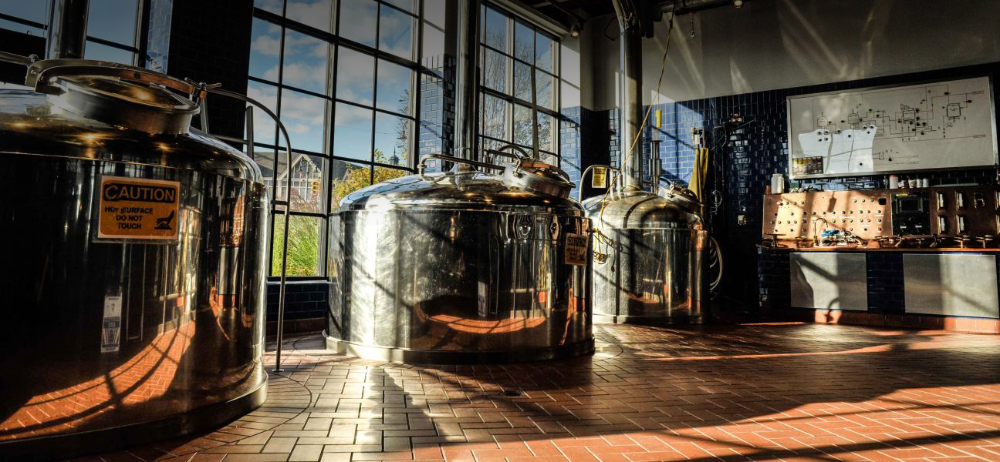

So you Want to Start a Brewery?

You've come to the right place! This website will be a guide for new brewers.
All of the information you could possibly need to start a new brewery resides here!
This page will inform you on many important topics including:
All brewers start somewhere and this website can help you begin your journey.
Dont forget to sign up for our news letter for up to date information one the
latest in the Maryland craft brewing world!